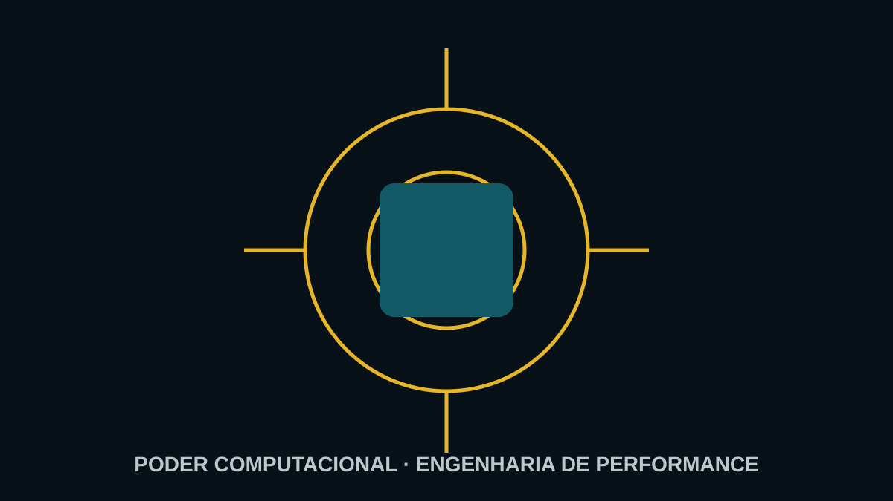

Lean Six Sigma · Fluxo
Elimine os desperdícios que tornam sua empresa lenta e cara.
Mapeie o fluxo de valor e reduza espera, excesso, movimentação, retrabalho e atividades que não entregam valor.

O desperdício está dentro do processo
Filas, aprovações, transferências, estoques intermediários e tarefas duplicadas consomem recursos. O cliente não paga por essas atividades, mas sua empresa paga.
Como atacamos
Usamos SIPOC, Value Stream Mapping, Takt Time, análise de capacidade, Spaghetti Diagram e trabalho padronizado para enxergar o fluxo ponta a ponta.
- mapa estado atual;
- identificação de desperdícios;
- gargalos e restrições;
- estado futuro;
- plano de transformação.
Se a maior perda estiver em trocas e preparações, veja redução de setup com SMED.